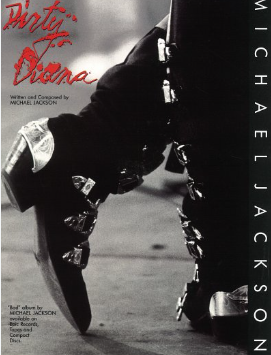
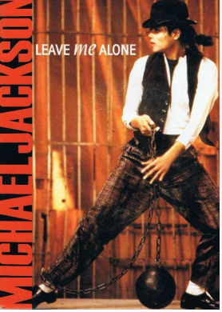

Bad
31 de agosto 1987
| Portada | Nombre de cancion | Reproducir | |
|---|---|---|---|
| 1 | I just Can't Stop Loving You | ||
| 2 | Bad | ||
| 3 | The Way You Make Me Feel | ||
| 4 | Man in the mirror | ||
| 5 |  | Dirty Diana | |
| 6 | Another Part of Me | ||
| 7 | Smooth Criminal | ||
| 8 |  | Leave me Alone | |
| 9 | Liberian Girls | ||
| 10 | Speed Demon | z |